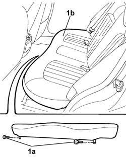

7050A20 Single rear seat cushion - R.R.
- Path
- Procedures > 70 FITTINGS > 7050 REAR SEATS > 7050A REAR SEAT ASSEMBLY > 7050A20 Single rear seat cushion - R.R.
- Kind
- repair procedure (removal / refitting; the operation number is the code)
- Applies to
- all engines; all production periods
- Interactive page
- https://sloeber94.github.io/elrnDB-lThss/en/#/114373
Applies to: all engines; all production periods
 Removing
Removing
 Refitting
Refitting1. Undo the fixing bolts (1a) and remove the singe rear seat cushion (1b).

Applies to: all engines; all production periods
Refitting
Removing- Fit the single rear seat cushion and tighten the fixing bolts to torque.
 | Value - daNm | Fastening | Component | Ø |
|---|---|---|---|---|
. | 4 | Bolt | REAR SEAT CUSHION TRIM | M10 X 1.25 |
Topics that link to this page (32)
- 5505C26 ENGINE COMPARTMENT built in wiring - R.R.
- 5505C41 PASSENGER COMPARTMENT built in WIRING - R.R.
- 5550D16 third brake light - r r
- 5570T98 REAR SPEAKER (one), lh or rh - r.r.
- 5580C50 Head Bag module (one), left or right - R.R.
- 5580C60 Rear seat Side Bag Module (one), left or right - R.R.
- 5580E75 PASSIVE ENTRY AERIAL on rearscreen base crossmember - R.R.
- 7010A34 Rear side DOOR HOUSING SEAL - R.R.
- 7025B10 Boot lid - Realignment
- 7025B22 Boot LID HINGES (one), left or right - R.R. with lid removed
- 7035B14 Rearscreen (bonded) GLASS - R.R. for Replacement - Includes cleaning housing in bodyshell
- 7040H44 Left or right rear pillar lower trim (one) - R.R.
- 7040H80 REAR PARCEL SHELF - R.R.
- 7040L18 Passenger compartment rear floor carpet - R.R.
- 7040L44 RUNNING BOARD for REAR DOOR HOUSING (one) left or right - R.R.
- 7050A19 REAR SEAT BACKREST - R.R.
- 7050A47 Side panel (one) for rear seat backrest, left or right - R.R.
- 7050A54 Rear seat backrest frame - R.R.
- 7050A56 Rear seat cushion frame - R.R.
- 7050A78 SKI HOLDER FLAP for rear seat backrest - R.& R.
- 7050B18 REAR SEAT ARM REST - R+R
- 7050D20 Rear seat cushion cover - R.R.
- 7050D30 Rear seat backrest cover - R.R.
- 7050D42 Rear seat backrest side panel cover (one), left or right - R.R.
- 7050J42 Rear seat head restraint folding motor (one), left or right - R.R.
- 7050M22 Rear seat CUSHION HEATER PAD, left or right - R.R. after electric circuit check
- 7050M26 Rear seat backrest heater pad, left or right - R.R. after electric circuit check
- 7065B08 Rear seat belt (one) with pretensioner on reel, left or right - R.R.
- 7065B14 Left or right rear seat belt ANCHORAGE ROD - R.R.
- 7065B18 Centre rear SEAT BELT - R.R.
- 7065C25 Electric sun blind motor - R.R.
- 7065C26 Sun blind for electric rearscreen - R.R.